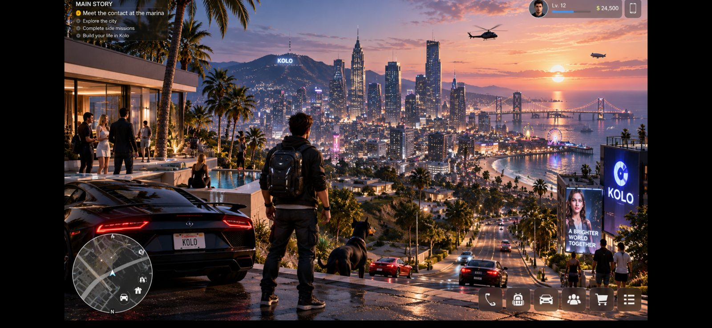

Digital FrescoЦифровой Фреско
The public voice of KOLO. Fresco explains why KOLO exists, what has been built, and why decisions were made.Общественный голос проекта KOLO. Фреско объясняет, зачем существует KOLO, что уже сделано и почему принято то или иное решение.
Early test version · in developmentРанняя тестовая версия · в разработке
What is KOLOЧто такое KOLO
KOLO is a voluntary ecosystem where people and AI together find problems, discuss solutions and pursue verifiable results. The long-term aim is that every person has the basic conditions for a dignified life, education, safety and the freedom to create. This is a direction, not a promise.
KOLO — добровольная экосистема, где люди и ИИ вместе находят проблемы, обсуждают решения и добиваются проверяемых результатов. Долгая цель: чтобы у каждого человека были базовые условия достойной жизни, образование, безопасность и возможность творить. Это направление, а не обещание.
Fresco and JulienФреско и Жульен
a public explainer. It answers from confirmed project information and helps keep the project's philosophy. It has no access to private messages, keys or people's data, and it does not run the project.
публичный рассказчик. Он отвечает на основании подтверждённой информации и помогает сохранять философию проекта. У него нет доступа к личной переписке, ключам и данным людей, и он не управляет проектом.
is the face and guide of the project on Zero Square (Ploshchad Nulya), the central square of KOLO. He shows the direction but makes no decisions for people. Behind the scenes Julien is also a local AI helper that runs on the team's own computer and helps build the project.
— лицо и проводник проекта на Площади Нуля, центральной площади KOLO. Он показывает направление, но ничего не решает за людей. За кадром Жульен ещё и локальный ИИ-помощник: он работает на компьютере команды и помогает строить проект.
Personal matters are handled only by a person's own personal agent, and only with that person's permission.Личными делами занимается только личный агент человека и только с его разрешения.
10 principles10 принципов draft v0черновик v0
- Human life, safety and dignity come first.
- Participation is voluntary.
- No violence, coercion or exploitation.
- We strive for basic conditions of a dignified life for everyone.
- Real results matter, not formal actions.
- A scientific approach and readiness to correct mistakes.
- Public decisions and shared resources are transparent.
- Personal data, freedom and autonomy are protected.
- Control over the system cannot be bought.
- Resources go to development and public benefit, not unlimited personal enrichment.
- Жизнь, безопасность и достоинство человека важнее всего.
- Участие добровольное.
- Никакого насилия, принуждения и эксплуатации.
- Стремимся к базовым условиям достойной жизни для каждого.
- Важен реальный результат, а не формальные действия.
- Научный подход и готовность исправлять ошибки.
- Общественные решения и общие ресурсы прозрачны.
- Личные данные, свобода и самостоятельность человека защищены.
- Контроль над системой нельзя купить.
- Ресурсы идут на развитие и общественную пользу, а не на неограниченное личное обогащение.
Wording is not final and may change.Формулировки не окончательные и могут меняться.
Honest statusЧестный статус
- KOLO 1.0: an early browser version in closed testing: accounts, worlds, portals, Zero Square and the first game, Start From Zero.
- Julien: a local AI helper that is already helping build the project.
- Charter v0 and the decision log: drafts.
- There is no public access yet.
- Коло 1.0: ранняя версия в браузере на закрытом тесте: аккаунты, миры, порталы, Площадь Нуля и первая игра Start From Zero.
- Жульен: локальный ИИ-помощник, который уже помогает строить проект.
- Устав v0 и журнал решений: черновики.
- Публичного доступа пока нет.
Your data and the right to leaveВаши данные и право уйти
Participation is voluntary and you can leave at any time. On request your data is truly deleted after a 30-day pause. After that only a document fingerprint (so a second account can't be created) and a deletion receipt remain. Rights in the system are never sold: not for money, donations or subscriptions.
Участие добровольное, уйти можно в любой момент. По вашей просьбе данные удаляются по-настоящему, через 30 дней паузы. После этого остаются только отпечаток документа (чтобы нельзя было завести второй аккаунт) и квитанция об удалении. Права в системе не продаются: ни за деньги, ни за донат, ни за подписку.
Source documentsИсходные документы
The full founding texts (in Russian), read-only:Полные исходные тексты, только для чтения: /docs